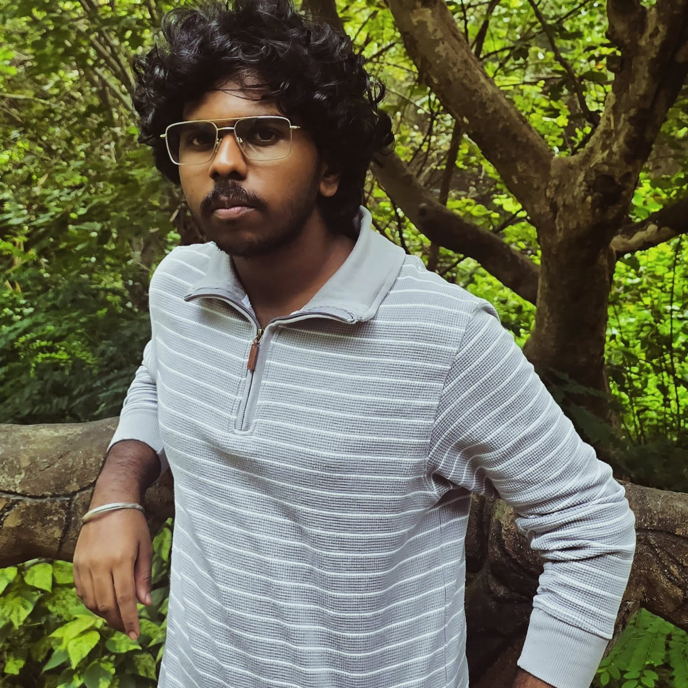

I'm interested in stuffs like Full Stack Web Development, UI/UX Development, Game development, AI and similar stuffs and right now in a journey to master the full stack Web Development and start freelancing in that field. Not an experienced or a skilled person but learning possible skills and interested to do so.
Higher Secondary: Sri Valli Vilas Alaya CBSE School, Vazhapattu.
Senior Secondary: Sri Valli Vilas Alaya CBSE School, Vazhapattu.
Bachelor's Degree: BTech in Computer Science and engineering (AI And Robotics) at VIT Chennai (2026-29).
Work Experience: 0 yrs
Internships: 0
Freelancing: 0
Hobbies: Playing games, watching movies and anime, learning new things.
Languages Known: English,Tamil.